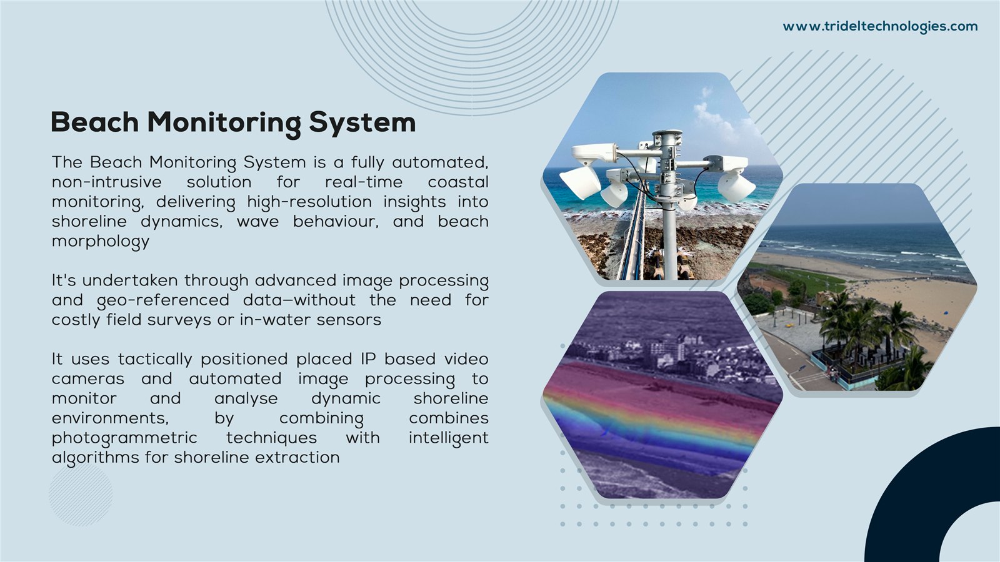
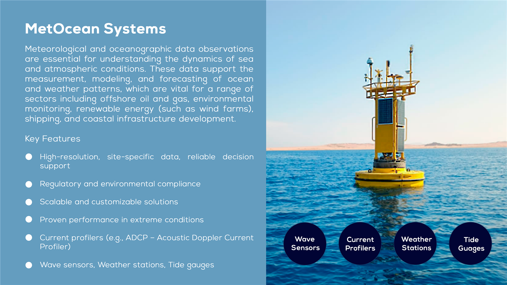

GeoTechnical Survey
Tridel provides specialized engineering support for coastal development and marine infrastructure. From dredging reclamation to underwater instrumentation, our engineering services ensure projects are built on a solid foundation of technical expertise and practical experience.

Marine and Onshore Boreholes
Comprehensive geotechnical investigations using advanced drilling and sampling techniques.
View Details
Vibro Coring
High-frequency vibration technique collecting undisturbed sediment samples from the seabed.
View Details
Gravity Coring
Efficient sampling method utilizing gravity to penetrate soft seabed sediments.
View Details